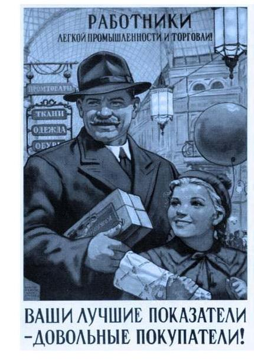

В связи с переходом на телевидение от Билайн, впечатления от которого как-нибудь позже, пришлось переделать домашнюю локальную сеть, о которой тоже не сегодня. Так вот. Для того, чтобы провода не болтались по коридору, а было всё как я люблю мне понадобилась одна незамысловатая штука под названием проходной адаптер, согласно номенклатуры магазина DNS. Попросту — эта штука соединяет две витых пары.

Проходные адаптеры, как информирует офсайт компании есть в каждом салоне и я по дурной привычке поехал в самый первый из них, что напротив ТЦ «Спутник».
Как проходила покупка в DNS на Октябрьском:
Зашёл в магазин, жду когда освободится консультант. Никто не торопится, пара что-то смотрит в мониторах. Выхватываю проходящего мимо меня одного. Есть? Вроде есть. Начинаем вместе перебирать номенклатуру на компьютере. Находим. Выписывает бумаги. С бумагами иду к кассе у двери (только там принимают карты, но в любом случае ни за одной из касс нет кассира). Жду. Кассир стоит рядом, с охраной, что-то смотрят в мониторе. Еще жду. Интересуюсь у них работает ли касса. В этот момент проходит мимо мой консультант и говорит, найти не можем. Сейчас еще поищем. Идём на выдачу. Ищут. Не находят. «В остатках числится, но использовали на нужды магазина». Уехал.
На следующий день захожу на сайт. Убеждаюсь, что адаптеры по-прежнему есть везде в том числе и на Октябрьском. Решаю купить на швейке. Учёный.
Как проходила покупка на Швейке.
Звоню. Берёт трубку молодой человек. Спрашиваю есть проходной адаптер. Говорит сейчас посмотрю. Я спрашиваю облегчу ли я ему работу, назвав номенклатурный номер? Говорит не надо, так всё помнит. Да есть. Спрашиваю, точно? А то… Да точно, он будет ждать вас на кассе. Приехал. Купил.
Молодого человека зовут Дмитрий. Рекомендую.
Разумеется, раз на раз не приходится и всё такое, но это не первое разочарование в салоне DNS на Октябрьском, и не первые приятные впечатления от салона на швейке
p.s. Аркон Елизаров еще хвалит DNS на Кузнецком, я же поругаю еще DNS на Цирке